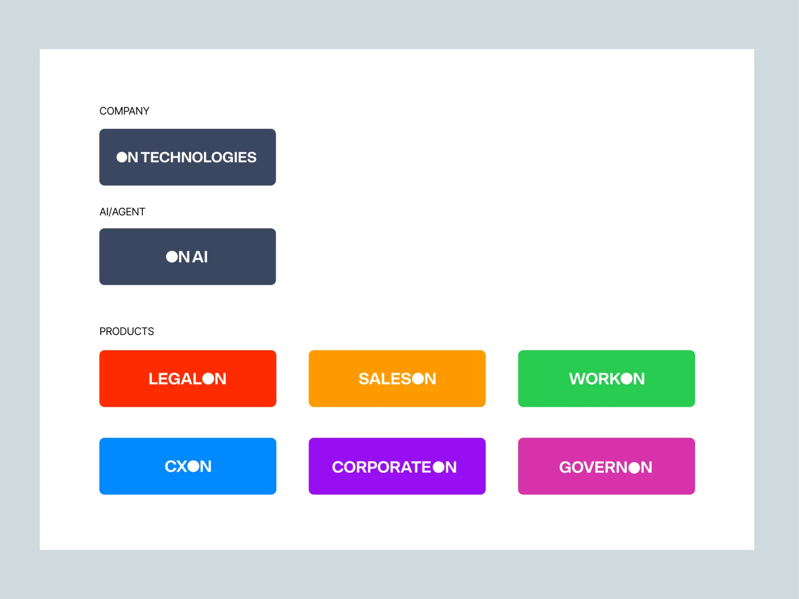
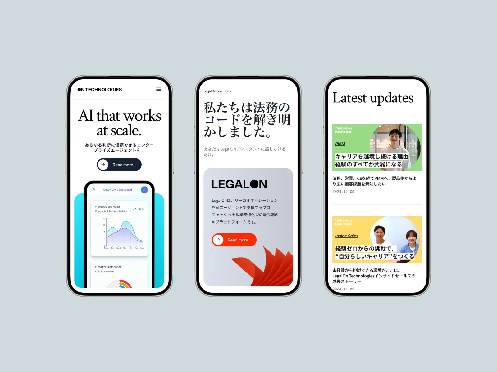
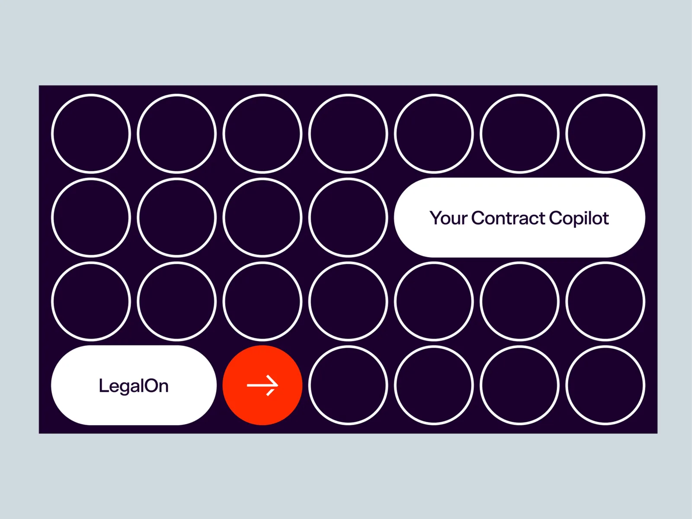
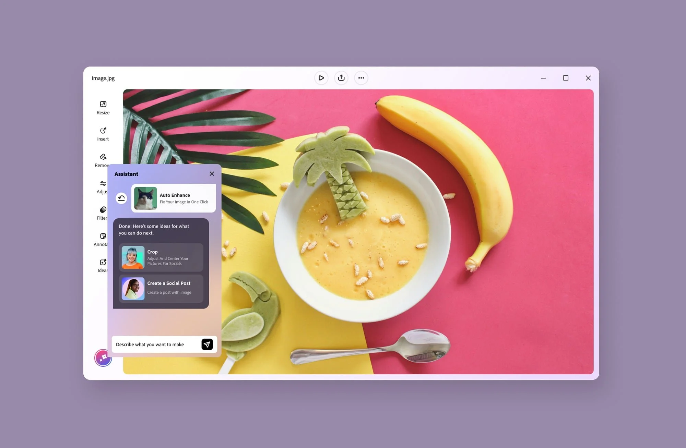
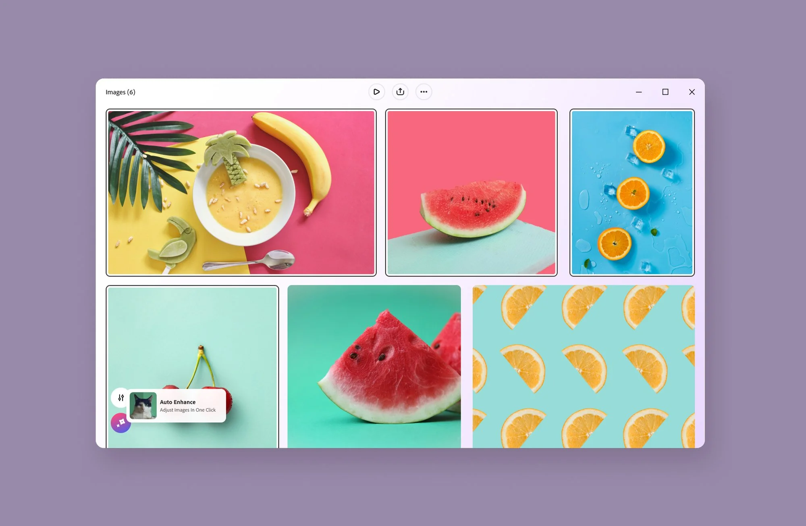
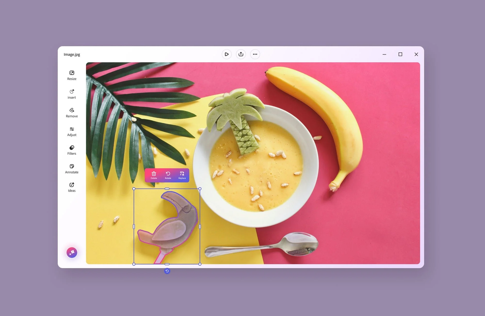

DESIGNING FOR turbulent TIMES AHEAD.
AI-Native Product Studio
→ AI product design
→ Brand systems
→ Product strategy
→ Design through build
Creating experiences to get you where you need to go, even as the water keeps changing.
AI is changing how people find, trust, and use everything, and most companies feel it without knowing what to do next. Startups move fast on engineering but haven't built the brand people stay for. Established companies have the trust, and are still learning to carry it into an AI-first world. We work with both.
Strategy, design, and build happen together, not handed off in sequence. What comes out is still elegant, still human, built to carry a company through water the rest of the industry hasn't learned to read yet.
Twenty years of work with the companies people already trust.


Brand strategy & design
We define what brands stand for and how they show up. Positioning, identity, and systems built to scale and evolve. AI expands how we explore and create.
→ Brand strategy, identity systems, positioning, art direction
Products & platforms
Websites, apps, and platforms built for adoption. Design that adapts as the product grows and holds up when the team scales past the people who started it.
→ Product design, UX, design systems, web, mobile
AI product design
Companies are still catching up on agentic AI. The model working is not the same as the product working. Design decides whether people trust it and come back.
→ AI product design, agentic interfaces, conversational UI
Global brand & product
Brands and products that work in one market rarely survive translation intact. Meaning has to be rebuilt, not converted. Bilingual design leadership across the US and Japan.
→ Global brand platforms, localization, bilingual leadership
Design judgment, at the scale it has to survive.
540M+
Users and visitors interacted with our design in Walmart app
114%
Increase of monthly active users from our strategy
5X
Increase in add-on discovery and use in Express
Four ways
this looks
in practice.
01 LegalOn
02 Adobe Express Photos
03 Walmart
04 Adobe Express Enterprise
Project 01
LegalOn's AI Brand Platform
Global Brand & Product Platform
LegalOn built Japan's leading legal AI, then expanded into a broader suite of AI-powered business products. The platform had to hold two opposing demands at once: one coherent global identity across seven products, and enough room for each to stand on its own.
The resolution was the “ON” concept: always on, always intelligent, always working.




Project 02
Adobe Express Photos
0-to-1 AI Product Design
Adobe wanted to democratize image editing. Adobe's new AI-powered desktop image editor transforms complex editing into one-click operations, making professional-quality enhancement accessible to marketers, SMBs, office workers, and consumers.



Project 03
Walmart's AI-First Shopping Experience
AI Commerce Strategy & Product Design
Search at Walmart is used by millions every day, which made it both the highest-leverage place to introduce AI and the easiest place to lose trust. The position was that AI should layer onto search rather than replace it, tested in reversible ways on top of a stable core.
That framing became the foundation for multimodal search, an AI wizard with AR, and GenAI fashion discovery.
Project 04
Adobe Express Enterprise Platform
Embed SDK + Plugin Ecosystem
Express had to work not only as an app, but as a platform other companies could build on and inside of — an embed SDK and an add-on marketplace, designed so third-party surfaces still felt like Express.
Result
5X increase in add-on discovery and use in Express.
Designers hand off.
Builders wait for specs.
Neither is necessary anymore.
Start with the strategy
Time with Claude and ChatGPT thinking through the problem, the user, and the product logic — getting to a clear point of view before a single pixel or line of code exists.
→ Problem framing, product logic, positioning
Design and prototype together
Moving between Figma and AI tools to sketch flows, screens, and interactions. Close enough to the real thing to be tested and shared without waiting for engineering.
→ Figma, Figma Make, rapid prototyping
Ship it
Claude Code, Cursor, and V0 generate and refine working code. The build is directed, not delegated — knowing what you want, knowing when it's right, and knowing how to get there fast.
→ Claude Code, Cursor, V0, deployed product
The stack, and how we rate it.
Published openly, and kept current.
Claude
core stackStrategic briefs, long-form synthesis, prompt writing for coding.
Claude Code
core stackFront-end builds, design-to-code handoff, live iteration during client sessions.
Figma + MCP
core stackDesign system source of truth, and the token pipeline that feeds Claude Code directly.
Cursor
in rotationLine-level work where you want to see the diff before it lands.
Claude Design
watchingPrototypes, concepts, and design systems built conversationally.
Lovable
in rotationPrompts into polished, working web apps — the easiest path from idea to credible product.
Raft Design is an AI-native studio collaborating with companies in the U.S. and Japan on brand, product, and innovation.
Founded and run by Lance Shields, we have twenty years of building brand, product, and platform work across Tokyo and San Francisco taught the same lesson twice: what survives isn't the work built to impress. It's the work built to move. We work hands-on, owning the hard problems and building alongside product and engineering rather than handing off. Design leadership at Adobe and Walmart. Brand and product work with LegalOn, Visa, Hitachi, and Red Bull.
Most engagements start with a company that isn't sure how to move yet. We work natively in both Japanese and English, with design leadership across both markets.

Awards
Webby Winner — All-in-One AI-Powered Creativity App, 2024, for Adobe Express
Webby Winner — Best Nonprofit Website, 2016, for Thatsnotcool.com
Webby Winner — Campaign in Advertising, 2016, for “I am a Witness”
W3 Gold — Mobile Apps: Education, 2017, for Respect Effect
Japan Marketers Award — Silver: B2B Marketing, 2011, for Yokogawa
Good Design Award — Best Global Website, 2008, for Hitachi.com

Three ways to work together.
Projects
We take on projects like a traditional studio, from brand and product design to shipped experiences.
Fractional leadership
We embed as fractional design leadership when a team is scaling and needs senior direction.
AI-native consulting
We consult with teams that want to make their own design practice AI-native.
Engagements run from short diagnostic sprints to ongoing partnerships. Most studios hand off static designs for someone else to build; we take work through to functioning software.
AI-Native Product Studio
Connect with me to explore your project's potential.
Hollywood, Los Angeles, CA 90068 · Tokyo, Japan
Designed by hand. Built by AI.